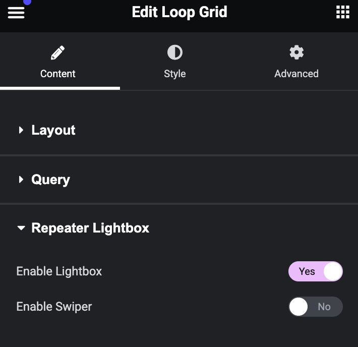
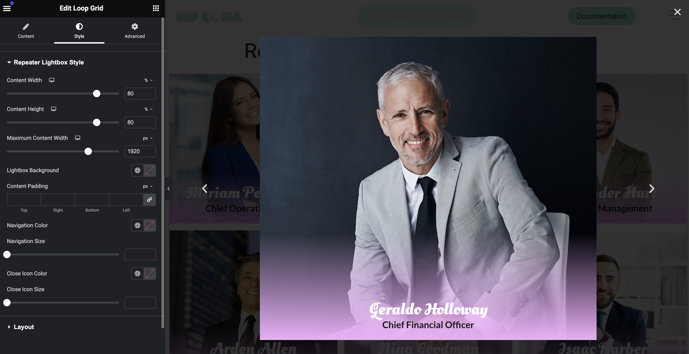
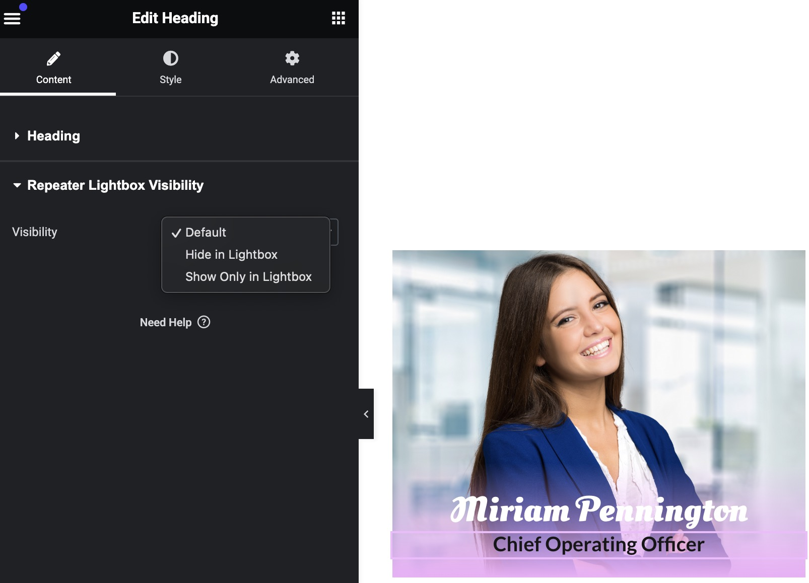

This guide covers the additional features available in the Pro version of Dynamic Elementor ACF Repeater.
Start your 3-day free trial of the Pro version to unlock all features. Start Your Free Trial
#Multiple Loop Grids in a Single Post
As of version 1.0.2, the Pro version exclusively supports using multiple Loop Grid widgets with ACF Repeater fields in the same post or template. This powerful feature is not available in the free version.
#Features and Benefits
Create diverse layouts using different Loop Grid widgets on the same page
Display various repeater fields from the same post in different formats
Apply unique styling and filtering to each Loop Grid independently
Combine multiple ACF Repeater displays in a single template
#Implementation Steps
Create separate Loop Item templates for each repeater field you want to display
Add multiple Loop Grid widgets to your template
Configure each Loop Grid with:
Its own Loop Item template
Unique repeater field selection
Independent filtering options
Custom styling
Multiple Loop Grids Example
#Use Cases
Display product gallery and product specifications in different grid layouts
Show team member photos in one grid and skills in another
Present project images and project details with different styling
#Lightbox and Swiper Configuration
Find the "Lightbox" section in Loop Grid widget settings
Enable the lightbox and swiper features

Enable Lightbox
Customize lightbox appearance:
#Repeater Lightbox Style
Content Width: Adjust the width of lightbox content (default: 80%)
Content Height: Set the height of lightbox content (default: 80%)
Maximum Content Width: Define maximum width in pixels (default: 1920px)
Lightbox Background: Choose background color for the lightbox overlay
Content Padding: Set padding for top, right, bottom, and left
Swiper Navigation Color: Customize the color of navigation arrows
Swiper Navigation Size: Adjust the size of navigation arrows
Lightbox Close Icon Color: Set the color of the close button
Lightbox Close Icon Size: Adjust the size of the close button

Style Lightbox
#Element Visibility Control
Control how elements appear in different contexts:
Select any dynamic repeater element in your Loop Item template
Open the Content tab
Find the "Repeater Lightbox Visibility" section
Choose from:
Default: Visible everywhere
Hide in Lightbox: Only visible in loop grid
Show Only in Lightbox: Hidden in loop grid, visible in lightbox
Element Visibility Control
Useful if you want to display elements in one place but not another, for example a button in the grid which you don't want to show in the lightbox.

Style Lightbox
#Advanced Filtering
Set up dynamic filtering for your Loop Grid:
#Basic Setup
In Loop Grid settings, find the "Filter" section
Enable filtering
Select filter source:
ACF field values
Custom taxonomies
Post meta
#Custom Taxonomy Filtering
The Custom Taxonomy Filter lets you filter your Loop Grid items using WordPress taxonomies (like categories, tags, or custom taxonomies).
Choosing Between Filter Types
Parent Post Taxonomy Filter (Default):
Works across multiple posts
Shows all taxonomy terms used by posts containing your repeater field
Filters entire groups of repeater items together (all items from same post)
Perfect for portfolio sites where each project (post) has multiple gallery items
Repeater Field Taxonomy Filter (Optional):
Works with individual repeater items
Can be used with a single post
Each repeater item can have its own taxonomy terms
Better for catalogs where each item needs individual categorization
#How It Works
#Default: Parent Post Taxonomy
By default, the filter uses taxonomy terms from the parent posts containing your repeater field.
Process:
The filter collects all taxonomy terms from posts that have your repeater field
When users select a term, it shows repeater items from posts with that term
All repeater items from the same post are filtered together
#Optional: Repeater Field Taxonomy
Enable "Use Repeater Taxonomy Field" to filter using taxonomy terms stored in your repeater field instead.
Process:
Choose a taxonomy (e.g., categories, tags)
Select which repeater field contains your taxonomy terms
Filter shows terms from the selected repeater field
Items are filtered based on their individual taxonomy values
#Display Options
Choose how users will interact with your filters:
Dropdown Menu
Clean, compact select menu
Good for lots of terms
Mobile-friendly
Checkbox List
Select multiple terms
All options visible
Great for multiple selections
Navigation Buttons
Button-style interface
Easy to click
Best for few terms
#Setup Steps
Enable the Filter:
Go to Loop Grid settings
Find the "Repeater Filter" section
Enable "Custom Taxonomy Filter"
Configure Filter:
Select which taxonomy to filter by (this will use parent post terms by default)
Choose your display style (dropdown/checkbox/navigation)
To use repeater field terms instead: Enable "Use Repeater Taxonomy Field" and select your repeater's taxonomy field
Customize Display:
Show/hide "All" option
Customize "All" text
Set filter alignment
Choose horizontal/vertical layout
Adjust spacing and margins
Style Your Filter:
Set colors and typography
Customize padding and margins
Style active/hover states
Adjust border and radius
#Common Applications and Examples
#Using Default Parent Post Taxonomy
Perfect when you have multiple posts and want to filter groups of repeater items:
Portfolio Websites
Example: A photography website with multiple project posts
Each project post is tagged (Wedding, Corporate, Events)
Each project contains multiple photos in a repeater
Filtering by "Wedding" shows all photos from wedding projects
All photos from the same project are filtered together
Real Estate Listings
Example: A property listing website
Properties (posts) tagged by location and type
Each property has multiple images in a repeater
Filter entire property galleries by "Beachfront" or "City Center"
All images from the same property show/hide together
#Using Repeater Field Taxonomy
Enable this when individual repeater items need their own taxonomy terms:
Product Catalogs
Example: A fashion store catalog
One post contains the entire season's collection
Each product in repeater has its own categories
Filter individual items by "Men's", "Women's", "Accessories"
Products can be filtered independently
Document Libraries
Example: A resource center
One post holds all company documents
Each document in repeater has topic tags
Filter by department or document type
Documents filter based on their own classifications
#ACF Relationship Query
The ACF Relationship Query feature allows you to display related content from across your site within your Loop Grid. This powerful feature helps you create dynamic content relationships and display them in your Elementor templates.
#Prerequisites
ACF Relationship field configured in your field group
Pro version of Dynamic Elementor ACF Repeater
Loop Grid widget with ACF Repeater enabled
#Setting Up Relationship Queries
Open your Loop Grid widget settings
Find the "ACF Relationship" section
Enable "Use ACF Relationship"
Select your relationship field from the dropdown
ACF Relationship Settings
#How It Works
When you enable relationship queries:
The Loop Grid automatically queries all related posts
Displays content based on your relationship field selections
Works with any post type (posts, pages, custom post types)
Shows all related posts without pagination
Maintains relationships configured in ACF
Relationship Queries
Your Loop Grid will now display related posts instead of regular repeater items. This is perfect for showing associated content like related products, team members, or linked resources.
#Common Use Cases
Related Content
Display related posts or articles
Show associated products
List team members by department
Content Relationships
Link projects to team members
Connect services to case studies
Associate events with venues
Dynamic Collections
Create featured content sections
Build cross-referenced galleries
Display linked resources
#Tips for Relationship Queries
Use ACF's interface to manage content relationships
Combine with visibility controls for flexible displays
Mix with filtering for advanced content organization
Leverage dynamic tags to show related post data
#Pro Field Types Support
The pro version adds support for these additional ACF field types:
#File Fields
Add document downloads to your loops
Display file type icons
Show file size and download count
Preview documents inline
#Gallery Fields
Display multiple images in a grid or slider
Enable lightbox for gallery items
Configure gallery layouts and spacing
Add hover effects and animations
#Relationship Fields
Display related content from other posts
Link to connected entries
Show relationship field data in your loops
Create complex content relationships
#Pro Tips
Use visibility control to create different experiences in grid vs lightbox
Combine slider with lightbox for image galleries
Set up multiple filters for complex content organization
Utilize relationship fields for connected content displays